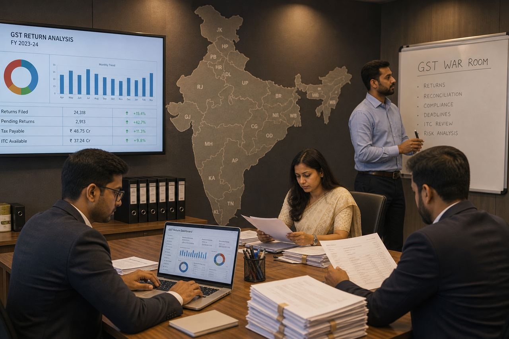

AI writes the answer
Submissions no longer reveal the learner. Trainers grade an output the student never had to reason through — and honest feedback disappears with it.
An AI simulation platform for business schools, colleges, schools and corporates — where learners step into a role, make the call, and live the consequence.
Made in India Built by IIT Bombay and Washington University alumni 17+ years each A library that grows every month
Read a framework and you can repeat it for a week. Make a decision inside one — against a clock, with the result landing on you — and it stays. Closing that gap is the whole job.
Theory is passive. A simulation makes it active — the learner stops receiving the concept and starts using it, under pressure, with something at stake.
Training that is watched does not change behaviour. Decisions that are made do. Repetition under realistic pressure is what builds the muscle memory a live role actually draws on.
Submissions no longer reveal the learner. Trainers grade an output the student never had to reason through — and honest feedback disappears with it.
Designing decision-driven, branching scenarios takes weeks. Between teaching loads and admin, faculty simply do not have those weeks.
Students can recite the framework flawlessly and still freeze when scarcity, trade-offs and a deadline arrive together.
The same case pack, year after year. Attention drops long before the concept lands — and the classroom goes quiet.
of students now use generative AI in assessed work — up from 53% a year earlier.
HEPI Student Generative AI Survey 2025
The decisions feel real because they are. The platform adapts to your level — so a student making their first business decision faces the same rigour as an executive making a crore-rupee call. Different calibration. Same spine. That is why decisions stick.
Scarce resources, conflicting metrics, live consequences. The learner runs the organisation instead of reading about one.
School, undergraduate, MBA, professional specialisation and corporate L&D — the same engine, calibrated to the cohort.
Every decision is logged and scored. Faculty see where the cohort broke, on which concept, in which round.
Each learner leaves with a skill map, a decision trail and a debrief that follows from what they actually did.
Bring your syllabus, your industry or your company case. We build the simulation around it.
There is no essay to outsource. Judgement under pressure is the assessment.
Because the learner acts inside the system, the platform can measure judgement — not phrasing.
Learning outcomes per learner — which concept landed, which one broke, and in which round it broke, for every student in the cohort.
A decision record and skill progression — what each person chose under pressure, what it cost, and how their judgement moves across repeated runs.
What they chose, when, and what they gave up to choose it.
Performance broken down by round and by topic, not one final grade.
Strategy, analysis, risk, collaboration and speed, scored separately.
Where the whole class broke — the concept to reteach on Monday.
A written explanation of consequences the learner can actually act on.
Learner vs cohort vs prior batches, across the same simulation.
“Hearing the idea is not the same as making the call.”
A learner who has run the simulation has a record of judgement under pressure. That is what a recruiter, a professor and the learner themselves actually need.
From a 20-minute classroom set to a full multi-role economy — chosen to fit the cohort, the clock and the concept.
Fast to deploy, auto-graded, built for large cohorts and quick diagnostics. Every option carries a consequence, not just a mark.
Levers, skill maps and KPI systems with branching outcomes — HelioGrid, MacroEcon, InvoGrid and more.
Teams compete and collaborate inside one shared market. What your rivals decide changes what your numbers do.
Many groups, many roles, one economy — firms, regulators, investors and consumers all shaping a single outcome.
Honest signal again — the score reflects the learner, not their AI tool
Scenario design collapses from weeks to a briefing conversation
Ready-made curriculum mapped to your syllabus and levels
Cohort analytics show exactly which concept to reteach
Apply the concept under scarcity, pressure and consequence
Concrete, personalised feedback instead of a single grade
A demonstrable decision record for placements and interviews
Sessions people want to attend — competition beats a case pack
A differentiated, application-first programme that markets itself
Consistent assessment quality across sections and campuses
Better placement readiness and measurable learning outcomes
For L&D: role-based practice without real-world downside
These skills are not taught in lectures. They are built through experience — through crisis, through decisions that matter. That is what Simulok.ai creates.
Making the call when the data is incomplete and the clock is running.
Analysing trade-offs under pressure, not in the calm of a case discussion.
Owning a decision and the consequence that follows from it.
Leading a team through genuine disagreement toward one call.
Learning from a failed round and pivoting rather than freezing.
Guiding other people through uncertainty you cannot fully resolve.
Build foundations for young minds.
Lemonade Stand · The Great Indian BazaarBuild depth for future leaders.
Zara · MacroEcon · The Mumbai ManufacturerBuild mastery for a career launch.
HelioGrid · Capital Storm · DealcraftBuild judgement without real-world downside.
K2 · Promo War Room · Batch Release CallA sample of the library — from a Class 6 lemonade stand to a listed-company statutory close, all running on the same engine.
 Engine · 8 quarters
Engine · 8 quarters
Newly appointed CEO of a commercial inverter maker. Target segments, set price and discounts, allocate a scarce salesforce. You cannot be everything to everyone.
 Hot-seat multiplayer · 5 roles
Hot-seat multiplayer · 5 roles
Six days, five asymmetric roles, hidden objectives and shared movement votes — then a facilitator debrief on information asymmetry and goal conflict.
 Policy · 7 years
Policy · 7 years
Finance minister of a fictional republic. Policy rate, taxes and public works across a seven-year cycle.

CA · GSTRun GST for a pan-India auto-component group as place-of-supply, ITC, e-invoice and notice strategy collide.
 Strategy · 12 quarters
Strategy · 12 quarters
Twelve quarters to carve out a niche against H&M, Shein and Amazon — and still turn a profit.
 Schools · 14 rounds
Schools · 14 rounds
Start with ₹500, choose location, recipe, price and marketing — then run the stand through real weather and real demand.
A slice of the library — not the full catalogue. New simulations ship every month. Filter by segment, or tell us the concept you need and we will show you the one that fits, or build it.
This page is a sample. The library is larger than what is shown here, and it expands every month. Specialisation cases are original work aligned to ICAI New Scheme competencies — not an ICAI product or official exam.
Simulok.ai is an Indian product, built by an Indian team, for Indian curricula first — then calibrated outward. Not a Western case pack with the currency symbol swapped.
The Mumbai Manufacturer. The Great Indian Bazaar. MacroEcon: The Kalyana Mandate. Rupee-denominated from the first decision — a ₹500 lemonade stand to a listed-company close.
Original casesSpecialisation labs aligned to ICAI New Scheme competencies — GST and ITC, Ind AS, IBC, transfer pricing, audit and independence. AICTE-track management. School maths and science.
ICAI · AICTE · schoolDesigned for cohorts measured in UDISE+ and AISHE numbers — 1.01 crore school teachers, 4.46 crore in higher education — not for a 40-seat elective.
Built for volumeIIT Bombay systems rigour and Washington University business-school grounding, in one product. Made in India, and built to hold up in any AACSB classroom.
India first, not India onlyEngineering and systems rigour behind every simulation engine — models that behave the way real markets do.
Global business-school grounding in how management concepts are actually taught and assessed.
Industry stalwarts with deep operating experience across strategy, finance, operations and technology.
Domain depth is why the simulations hold up under a sharp classroom. The trade-offs are real because we have lived them — and the debrief is written the way a practitioner would explain it, not the way a textbook summarises it.
We are open to understanding your needs — we have the answers. Tell us the concept you are struggling to teach, and we will show you the simulation for it, or build one.